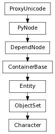

class counterpart of mel function character
This command is used to manage the membership of a character. Characters are a type of set that gathers together the attributes of a node or nodes that a user wishes to animate as a single entity.
Adds the list of items to the given character. If some of the items cannot be added to the character because they are in another character, the command will fail. When another character is passed to to -addElement, is is added as a sub character. When a node is passed in, it is expanded into its keyable attributes, which are then added to the character.
Derived from mel command maya.cmds.character
Return true if a blend exists between the two instanced clips on the character. If a blend exists, the animBlend node related to the blend is also returned.
| Parameters : |
|
|---|---|
| Return type: | bool |
Derived from api method maya.OpenMayaAnim.MFnCharacter.blendExists
An operation that flattens the structure of the given character. That is, any characters contained by the given character will be replaced by its members so that the character no longer contains other characters but contains the other characters’ members.
Derived from mel command maya.cmds.character
For use in edit mode only. Forces addition of the items to the character. If the items are in another character which is in the character partition, the items will be removed from the other character in order to keep the characters in the character partition mutually exclusive with respect to membership.
Derived from mel command maya.cmds.character
Return the animBlendInOut node corresponding to the specified index.
| Parameters : |
|
|---|---|
| Return type: | PyNode |
Derived from api method maya.OpenMayaAnim.MFnCharacter.getBlend
Returns the clip nodes that are blended by the blend node corresponding to the specified index.
| Parameters : |
|
|---|---|
| Return type: | (PyNode, PyNode) |
Derived from api method maya.OpenMayaAnim.MFnCharacter.getBlendClips
Return the number of blends that have been added to clips on this character.
| Return type: | int |
|---|
Derived from api method maya.OpenMayaAnim.MFnCharacter.getBlendCount
Returns the plug on the character that corresponds to the specified character member.
Derived from mel command maya.cmds.character
Given a plug, test the plug to see if it is owned by a character. If a character controls this plug, the character will be returned
| Parameters : |
|
|---|---|
| Return type: | bool |
Derived from api method maya.OpenMayaAnim.MFnCharacter.getCharacterThatOwnsPlug
Get the clipScheduler node that manages the playback of clips on this character. If no clips have been created for this character, this method will return an empty MObject .
| Return type: | PyNode |
|---|
Derived from api method maya.OpenMayaAnim.MFnCharacter.getClipScheduler
An operation which tests whether or not the characters in the list have common members. In general, characters should be mutually exclusive, so this should always return false.
Derived from mel command maya.cmds.character
An operation which tests whether or not all the given items are members of the given character.
Derived from mel command maya.cmds.character
Returns the clip library associated with this character, if there is one. A clip library will only exist if you have created clips on your character.
Derived from mel command maya.cmds.character
Returns the memberIndex of the specified character member if used after the query flag. Or if used before the query flag, returns the member that corresponds to the specified index.
Derived from mel command maya.cmds.character
Get the members of the character set that are attributes. Return them as a plug array. A character set can contain only attributes and subcharacters. To get all of the members of the character, use MFnSet::getMembers . To get the subcharacters, use MFnCharacter::getSubcharacters.
| Return type: | PyNode list |
|---|
Derived from api method maya.OpenMayaAnim.MFnCharacter.getMemberPlugs
This flag modifies the results of character membership queries. When listing the attributes (e.g. sphere1.tx) contained in the character, list only the nodes. Each node will only be listed once, even if more than one attribute or component of the node exists in the character.
Derived from mel command maya.cmds.character
Returns the name of the characterOffset node used to add offsets to the root of the character. Flag can have multiple arguments, passed either as a tuple or a list.
Derived from mel command maya.cmds.character
Return the scheduled animClip node corresponding to the specified index. The specified index should range from 0 to clipCount-1 where clipCount is the value returned by MFnCharacter::getScheduledClipCount .
| Parameters : |
|
|---|---|
| Return type: | PyNode |
Derived from api method maya.OpenMayaAnim.MFnCharacter.getScheduledClip
Return the number of clips that have been scheduled on this character.
| Return type: | int |
|---|
Derived from api method maya.OpenMayaAnim.MFnCharacter.getScheduledClipCount
Returns the scheduler associated with this character, if there is one. A scheduler will only exist if you have created clips on your character.
Derived from mel command maya.cmds.character
Return the animClip node corresponding to the specified index. The animClip node will be a source clip node. The specified index should range from 0 to clipCount-1 where clipCount is the value returned by MFnCharacter::getSourceClipCount .
| Parameters : |
|
|---|---|
| Return type: | PyNode |
Derived from api method maya.OpenMayaAnim.MFnCharacter.getSourceClip
Return the number of source clips managed by the clipLibrary node of this character. For more information on source clips, refer to the description of the MFnCharacter node.
| Return type: | int |
|---|
Derived from api method maya.OpenMayaAnim.MFnCharacter.getSourceClipCount
Get a list of the subcharacters that are members of the character set.
| Return type: | SelectionSet |
|---|
Derived from api method maya.OpenMayaAnim.MFnCharacter.getSubCharacters
An operation between two characters which returns the members of the first character that are not in the second character. In general, characters should be mutually exclusive.
Derived from mel command maya.cmds.character
Defines an annotation string to be stored with the character.
Derived from mel command maya.cmds.character
Returns the user defined alias for the given attribute on the character or and empty string if there is not one. Characters automatically alias the attributes where character animation data is stored. A user alias will exist when the automatic aliases are overridden using the aliasAttr command.
Derived from mel command maya.cmds.character
Adds the list of items to the given character. If some of the items cannot be added to the character, a warning will be issued. This is a less strict version of the -add/addElement operation.
Derived from mel command maya.cmds.character
Defines an annotation string to be stored with the character.
Derived from mel command maya.cmds.character